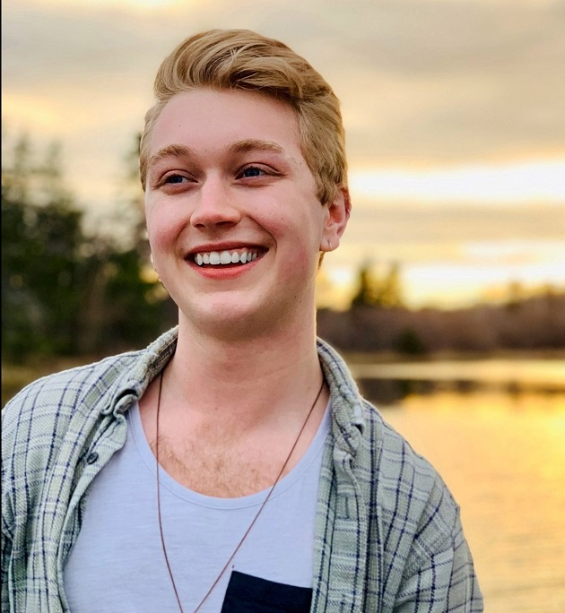
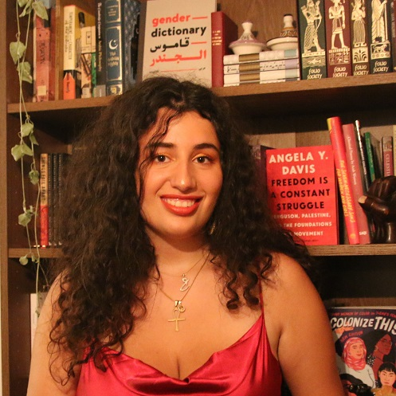
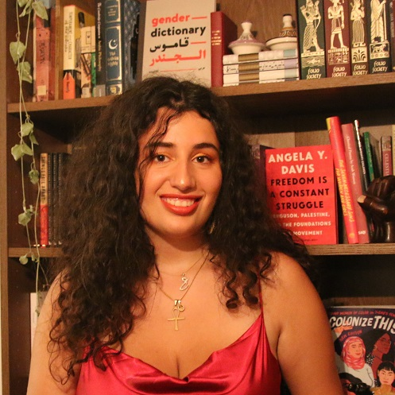
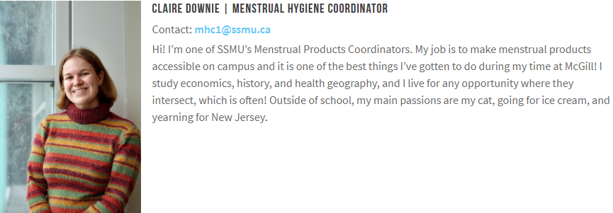
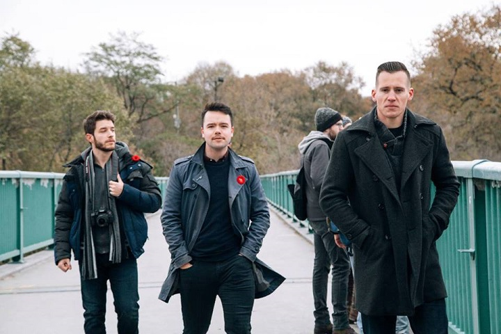
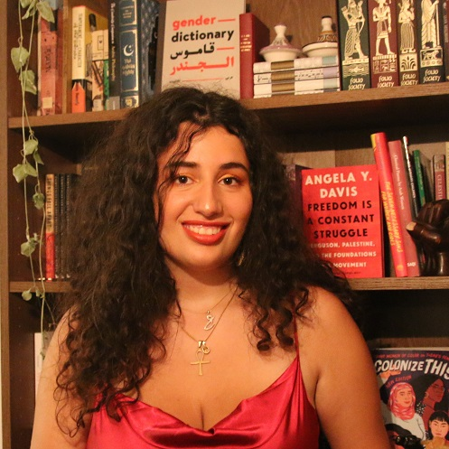

McGill Student Staff
December 21st, 2020
When writing up the article on the Students for Western Civilization attempting to start a chapter at McGill, which you can read here, I came across the McGill Student Staff page. Yes, there's the tranny "Brooklyn" Frizzle, which is the fake name for a fake woman, who was quoted as not wanting this anti-anti-White organization at McGill.
Brooklyn Frizzle, SSMU Spokesperson
As a reminder of that, here was his writeup.
Student Staff McGill University
TDC_ARTICLE_START
Brooklyn is entering their third year of Microbiology and Immunology - which is extremely applicable to the University Affairs portfolio, for obvious reasons. As Vice-President (University Affairs), they fight for equity and accessibility and are committed to bringing students’ voices back to University decision-making. In this capacity, they sit on a handful of University Committees, including the Senate Steering and Nominating Committees. Their passions include poetry and coming up with creative names for groups and meetings. They ask that you ignore the growing stack of RedBull cans on their desk.
TDC_ARTICLE_STOP

"Their"
Yes, I know I just used this content, but it's funny. Imagine being such a nightmare to deal with that you force other people to start calling you "they," because they know that if they call you "him" or "her" that you'll have a manufactured blowup and try to take your spiteful rage out at them. So instead you have to refer to this mentally ill man as "they," which in the context of the sentence reads as plural. Then again, maybe "they" have a multiple personality disorder and it's accurate. Who knows? I know Xir don't.
Oh and this AIDS patient is majoring in Microbiology and Immunology. Maybe if THEY work real hard THEY can use THEIR education to cure themselves of the super AIDS THEY probably suffer from.
 But seriously "their passions include poetry and coming up with creative names for groups and meetings." Imagine someone so weird, worthless, and tedious. Well, now you don't have to imagine anymore.
But when going to that page I took a look at the other student staff members. There's the obligatory anti-White one, Abeer Almahdi.

But seriously "their passions include poetry and coming up with creative names for groups and meetings." Imagine someone so weird, worthless, and tedious. Well, now you don't have to imagine anymore.
But when going to that page I took a look at the other student staff members. There's the obligatory anti-White one, Abeer Almahdi.
Abeer Almahdi, "Equity Commissioner"
TDC_ARTICLE_START
Abeer is in her fourth-year, studying International Development Studies, English, and World Islamic and Middle East Studies. She is Egyptian-Syrian and her sun sign is Cancer. As an Equity Commissioner, she works on processing equity complaints, chairing the equity committee, and sitting on University-level committees. Abeer is also an artist and writer.
TDC_ARTICLE_STOP
I mean at this point do I have to write anything? It's like I can't be mad at how Anti-White this all is, because the girl running this is putting her Astrological sign in there, and talking about how she's "also an artist and writer." I 100% guarantee you this little honey has rubbed one out to the imaginary visage of some Aryan Chad, probably in a Nazi Outfit.
But then I saw one that really caught my eye. And even though I put a link to the page, I think I need to actually just take a screenshot of this, because it's hard to believe. Don't worry if it gets squished, I'll quote this.

TDC_ARTICLE_START
Hi! I’m one of SSMU’s Menstrual Products Coordinators. My job is to make menstrual products accessible on campus and it is one of the best things I’ve gotten to do during my time at McGill! I study economics, history, and health geography, and I live for any opportunity where they intersect, which is often! Outside of school, my main passions are my cat, going for ice cream, and yearning for New Jersey.
TDC_ARTICLE_STOP

"My main passions are my cat and ice cream"
Menstrual Products Coordinator, let that sit in. And they actually have two of them, this is the only one with a pic and a writeup. I guess they needed two because of the great "McGill Vaginal Discharge Episode of 2015." Maybe if you have a bunch of mentally ill dudes running around with gaping "vaginas" that are actually just holes a doctor created where their penises used to be you get all sorts of weird "vaginal" issues that necessitate two vagina outreach coordinators to handle.
But also, her name is "Downie" and she looks vaguely like she has Down Syndrome. And her main passion is her cat. And I believe her when she says that.
I mean these people are so ridiculous from so many different angles that it's actually kinda hard to make fun of them without missing something.
Folks, this is what we're up against trying to get into McGill. Some Brown girl who wants our cocks, a tranny with AIDS, and then some girl who walks around in an ugly Christmas Sweater all year round who's self-described main passions are her cat and eating ice cream.
I think we got this.

But seriously "their passions include poetry and coming up with creative names for groups and meetings." Imagine someone so weird, worthless, and tedious. Well, now you don't have to imagine anymore.
But when going to that page I took a look at the other student staff members. There's the obligatory anti-White one, Abeer Almahdi.
